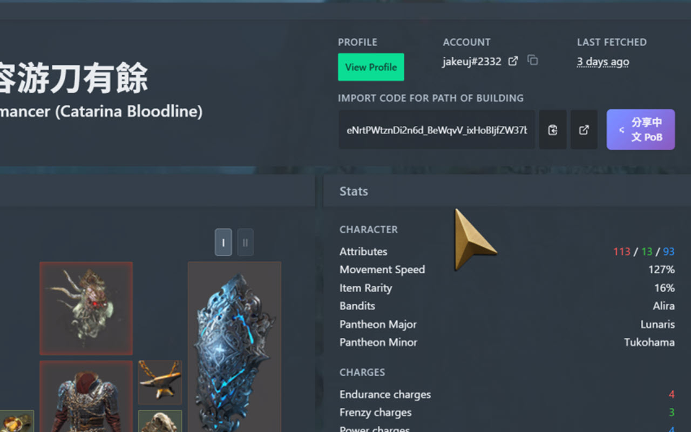

在 poe.ninja 角色頁面自動加入分享按鈕，快速建立編年史中文 PoB 連結

在 poe.ninja 角色頁面自動加入分享按鈕，無需手動操作
點擊按鈕即可上傳 PoB 代碼到編年史 API，建立中文連結
連結自動複製到剪貼簿，直接貼上即可分享
精心設計的 UI，支援深色模式，載入動畫流暢
遵循 SOLID 原則，程式碼結構清晰易維護
GitHub Actions 自動測試、打包、發布
使用 Chrome、Brave、Arc 等 Chromium 瀏覽器時，直接前往 Chrome 線上應用程式商店 安裝。
使用 Microsoft Edge 時，直接前往 Microsoft Edge Add-ons 安裝。
需要離線測試或協助開發時，可從 GitHub Releases 下載 ZIP，解壓後透過開發者模式載入 src 資料夾。
ShareButtonController - UI 控制器SharePobUseCase - 分享用例ChroniclesApiClient - API 客戶端PoeNinjaPobExtractor - PoB 擷取器